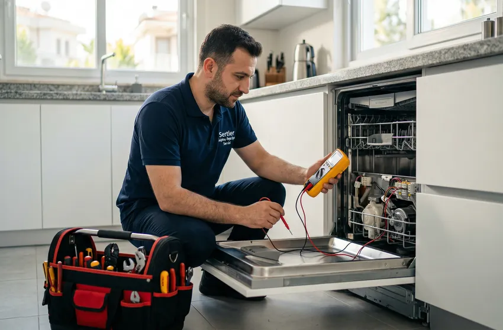
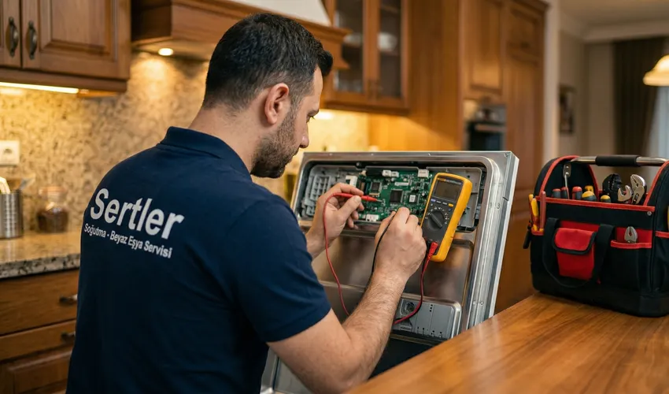
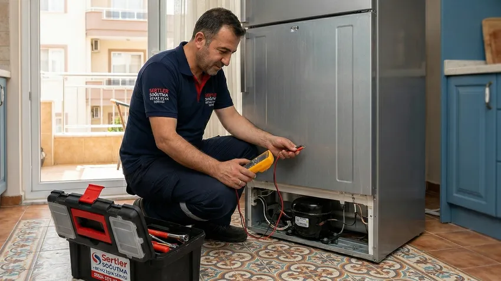

⚡ Arızalar Sizi Korkutmasın: Sertler Soğutma Tarsus Beyaz Eşya Tamircisi Bir Telefon Uzağınızda!
Evlerimizde ve iş yerlerimizde yaşam kalitemizi belirleyen en temel unsurların başında beyaz eşyalar gelmektedir. Buzdolabı, çamaşır makinesi, bulaşık makinesi ve fırın gibi cihazlar, modern yaşamın koşturmacası içinde bizlere zaman kazandıran ve konforumuzu sağlayan sessiz kahramanlardır. Ancak bu cihazlar, yoğun kullanım, elektriksel dalgalanmalar veya teknik ömürlerini tamamlamaları sebebiyle zaman zaman arıza yapabilirler. Tarsus gibi sıcak iklimin hakim olduğu ve cihazların özellikle yaz aylarında performans sınırlarını zorladığı bir bölgede, güvenilir bir Tarsus Beyaz Eşya Tamircisi bulmak hayati önem taşır. İşte bu noktada Sertler Soğutma, yılların getirdiği tecrübe ve profesyonel hizmet anlayışıyla devreye girerek, beyaz eşya sorunlarınızı birer kabus olmaktan çıkarıyor.
Sertler Soğutma olarak vizyonumuz, sadece bozulan bir parçayı değiştirmek değil, cihazın tüm çalışma prensiplerini analiz ederek uzun ömürlü çözümler üretmektir. Bir Tarsus Beyaz Eşya Tamircisi arayışına girdiğinizde karşınıza pek çok seçenek çıkabilir; ancak teknik donanım, orijinal yedek parça garantisi ve müşteri odaklı yaklaşım söz konusu olduğunda firmamız bölgedeki lider konumunu korumaktadır. Arızalar her ne kadar can sıkıcı olsa da, uzman ellerde yapılan doğru müdahalelerle cihazlarınız ilk günkü performansına kavuşturulabilir. Bu kapsamlı rehberde, beyaz eşyalarınızın neden arızalandığını, doğru tamirci seçiminde nelere dikkat etmeniz gerektiğini ve Sertler Soğutma'nın fark yaratan hizmet standartlarını detaylarıyla ele alacağız.

Tarsus Beyaz Eşya Tamircisi Arayanlar İçin İpuçları
İnternet çağında bir hizmete ulaşmak oldukça kolay görünse de, gerçekten işinin ehli bir profesyoneli bulmak hala büyük bir titizlik gerektirir. Özellikle beyaz eşya gibi yüksek maliyetli ve karmaşık teknolojiye sahip cihazlar söz konusu olduğunda, rastgele bir seçim yapmak cihazın tamamen kullanılamaz hale gelmesine yol açabilir. Bir Tarsus Beyaz Eşya Tamircisi seçerken dikkat etmeniz gereken ilk kural, firmanın yerleşik bir adresi ve kurumsal bir kimliğinin olup olmadığıdır. Sadece bir telefon numarası üzerinden hizmet veren ve vergi kaydı bulunmayan kişilere cihazlarınızı emanet etmek, olası bir problemde muhatap bulamamanıza neden olacaktır.
Sertler Soğutma, Tarsus halkına şeffaf ve güvenilir hizmet sunma ilkesiyle hareket eder. Bir tamirci ararken mutlaka daha önceki müşteri referanslarını incelemelisiniz. Dijital platformlardaki yorumlar, firmanın arıza çözüm hızı ve teknik bilgisi hakkında size önemli ipuçları verir. Ayrıca, seçtiğiniz Tarsus Beyaz Eşya Tamircisi mutlaka değişen parça için bir garanti belgesi sunmalıdır. Teknik servis sektöründe güvenin karşılığı "belge"dir. Eğer bir usta yaptığı işe garanti veremiyorsa, kullandığı parçanın kalitesinden veya kendi işçiliğinden şüphe ediyor demektir. Firmamız, yapılan her işlemi kayıt altına alarak kullanıcıya güven aşılamaktadır.
Güvenilir Tarsus Beyaz Eşya Tamircisi Seçimi
Güvenilirlik, teknik servis sektörünün en temel taşıdır. Bir müşterinin evine girmek, mahremiyetine saygı duymak ve değerli eşyasını tamir etmek büyük bir sorumluluktur. Güvenilir bir Tarsus Beyaz Eşya Tamircisi, her şeyden önce dürüstlük ilkesinden ödün vermemelidir. Arıza tespit aşamasında, parça değişimi gerekmiyorsa bunu açıkça belirtmeli, müşteriyi gereksiz masrafa sokmamalıdır. Sertler Soğutma personeli, cihazınızın arızasını tespit ettikten sonra size arızanın nedenini, çözüm yolunu ve maliyet kalemlerini en ince ayrıntısına kadar açıklar.
Seçim yaparken dikkate alınması gereken bir diğer kriter ise uzmanlık alanıdır. Beyaz eşya teknolojisi her geçen gün gelişmekte; klasik motorlu cihazların yerini inverter motorlar ve yapay zeka destekli anakartlar almaktadır. Bu nedenle, seçeceğiniz Tarsus Beyaz Eşya Tamircisi sürekli eğitim alan, teknolojik yeniliklere hakim ve modern ölçüm cihazlarını kullanabilen bir ekip olmalıdır. Sertler Soğutma uzmanları, sektördeki tüm markaların (Arçelik, Beko, Vestel, Bosch, Samsung, LG vb.) güncel teknolojileri konusunda periyodik eğitimlerden geçmektedir. Bu uzmanlık, arızanın deneme-yanılma yoluyla değil, bilimsel verilerle ve doğru teşhisle çözülmesini sağlar.
Tarsus Beyaz Eşya Tamircisi Randevu Oluşturma
Hızlı yaşam temposunda kimsenin bir cihazın tamiri için günlerce bekleme lüksü yoktur. Özellikle bozulan bir buzdolabıysa, içindeki gıdaların bozulma riski saniyeler içinde artmaktadır. Sertler Soğutma olarak, randevu sistemimizi en verimli şekilde kurguladık. Bir Tarsus Beyaz Eşya Tamircisi ihtiyacınız olduğunda bize ulaşmanız oldukça basittir. Telefon hatlarımız veya dijital kanallarımız üzerinden talebinizi ilettiğinizde, müşteri temsilcilerimiz arızanın türünü ve cihazın markasını not ederek size en yakın mobil ekibimizi yönlendirir.
Randevu oluşturma aşamasında size sunulan en büyük avantaj, esnek çalışma saatleridir. Çalışan müşterilerimizin durumunu göz önünde bulundurarak, akşam saatlerinde veya hafta sonları da hizmet verebilen bir yapıya sahibiz. Tarsus Beyaz Eşya Tamircisi ekiplerimiz, randevu saatinden önce sizi arayarak müsaitlik durumunuzu teyit eder ve tam donanımlı araçlarıyla adresinize ulaşır. Bu disiplinli çalışma şekli, hem zaman kaybını önler hem de planlarınızın aksamasının önüne geçer. Sertler Soğutma randevu sistemi, "müşteri bekletilmez" ilkesi üzerine inşa edilmiştir ve bu yaklaşım bizi bölgenin en çok tercih edilen servisi yapmaktadır. Randevu alırken belirttiğiniz detaylar (örneğin; makinenin su boşaltmaması, buzdolabının ses yapması gibi), teknisyenlerimizin gerekli yedek parçaları yanlarında getirmesini sağlayarak çözüm süresini kısaltır.
Sertler Soğutma Tamir ve Bakım Metotları
Teknik servis süreçlerinde başarılı bir sonuç elde etmek için standartlaştırılmış tamir metotları uygulamak gerekir. Sertler Soğutma, her arızaya kurumsal bir protokol çerçevesinde yaklaşır. Süreç, öncelikle cihazın genel bir muayenesiyle başlar. Tarsus Beyaz Eşya Tamircisi ekiplerimiz, dijital ölçüm cihazları kullanarak elektrik akımı, gaz basıncı veya mekanik sürtünme gibi detayları kontrol eder. Sadece görünürdeki hatayı düzeltmek yerine, bu hataya neden olan kök sebebi bulmak bizim temel çalışma metodumuzdur.
Bakım süreçlerinde ise daha koruyucu bir yaklaşım sergiliyoruz. Örneğin, bir çamaşır makinesinin sadece bozulan pompasını değiştirmekle kalmıyor, kireçlenme durumunu, amortisörlerin esnekliğini ve deterjan çekmecesinin temizliğini de kontrol ediyoruz. Tarsus Beyaz Eşya Tamircisi olarak kullandığımız bakım metotları, cihazın verimliliğini artırmaya yöneliktir. Temiz bir kondenser veya bakımı yapılmış bir buzdolabı fanı, motorun daha az yorulmasını ve elektrik faturasının düşmesini sağlar. Sertler Soğutma, onarım sırasında cihazın fabrikasyon ayarlarına sadık kalarak müdahale eder ve bu sayede cihazın stabilitesini korur.
Sertler Soğutma Yerinde Tamir Hizmeti
Modern teknik servis anlayışında cihazın atölyeye taşınması, hem zaman kaybı hem de cihazın taşıma sırasında zarar görme riskini beraberinde getirir. Sertler Soğutma olarak, arızaların %90'ından fazlasını "Yerinde Tamir" modeliyle evinizde veya iş yerinizde çözüyoruz. Uzman bir Tarsus Beyaz Eşya Tamircisi ekibinin adresinize gelmesi, şeffaflığı da beraberinde getirir; zira yapılan her işlemi kendi gözlerinizle görebilirsiniz.
Yerinde tamir hizmetimiz, tam donanımlı mobil araçlarımız sayesinde mümkün olmaktadır. Bu araçlar, küçük birer atölye gibi tasarlanmış olup içerisinde en yaygın kullanılan yedek parçalar, lehimleme istasyonları, gaz dolum üniteleri ve test cihazları bulunur. Tarsus Beyaz Eşya Tamircisi personelimiz, cihazınızı sökmeden önce çevreyi korumak adına gerekli önlemleri alır ve iş bitiminde alanı tertemiz teslim eder. Eğer arıza yerinde giderilemeyecek kadar büyükse (örneğin; kazan değişimi veya motor sarımı gerekiyorsa), cihazınız özenle paketlenerek merkez atölyemize alınır ve her aşamada tarafınıza bilgi verilir. Sertler Soğutma farkı, sorunu müşterinin yaşam alanını minimum düzeyde etkileyerek çözmektir.
Sertler Soğutma Hızlı Arıza Giderme
Hız, teknik servis sektöründe bir opsiyon değil, zorunluluktur. Arızalanan bir buzdolabı demek, bir ailenin gıda stoğunun tehlikeye girmesi demektir. Arızalanan bir çamaşır makinesi, günlük rutinin tamamen felç olması demektir. Sertler Soğutma, Tarsus'un tüm mahallelerine yayılan geniş servis ağı sayesinde "hızlı arıza giderme" sözünü tutabilmektedir. Bir Tarsus Beyaz Eşya Tamircisi olarak hızımız, sadece ulaşım süresiyle sınırlı değildir; aynı zamanda arıza tespit hızı ve çözüm üretme kabiliyetimizi de kapsar.

Teknisyenlerimiz, tecrübeleri sayesinde arızanın sesinden veya hata kodundan sorunu saniyeler içinde teşhis edebilirler. Hızlı arıza giderme sürecimizde, gereksiz parça değişimlerinden kaçınarak doğrudan sonuca odaklanıyoruz. Sertler Soğutma'nın geniş yedek parça stoğu, parça siparişi için günlerce beklemenizi engeller. Tarsus'ta en iyi Tarsus Beyaz Eşya Tamircisi unvanını almamızın sebeplerinden biri de budur: Bizimle çalışırken zamanınız size kalır. Acil durum ekiplerimiz, günün her saatinde kritik arızalara müdahale etmek için teyakkuz halindedir. Çözüm odaklı yaklaşımımız sayesinde, en karmaşık elektronik arızalar bile aynı gün içerisinde sonuçlandırılmaktadır.
Tarsus’ta Profesyonel Teknik Destek
Profesyonellik, sadece teknik bilgiyle değil, sunulan hizmetin bütünüyle alakalıdır. Tarsus gibi gelişen bir şehirde, kurumsal bir teknik destek almak kullanıcıların en doğal hakkıdır. Sertler Soğutma, yerel bir firma olmanın sıcaklığı ile kurumsal bir şirketin disiplinini harmanlamıştır. Sunduğumuz profesyonel teknik destek, cihazın arızalanmasından çok önce, danışmanlık hizmetiyle başlar. Hangi cihazın Tarsus'un kireçli suyuyla daha iyi başa çıkabileceği veya hangi klimanın en az enerjiyi harcayacağı gibi konularda da müşterilerimize rehberlik ediyoruz.
Tarsus Beyaz Eşya Tamircisi ekiplerimiz, sahada karşılaştıkları her sorunu birer vaka analizi olarak görür. Profesyonel teknik desteğimiz kapsamında; düzenli arıza raporlaması, kullanıcı hatalarının önlenmesi için bilgilendirme ve enerji verimliliği optimizasyonu yer alır. Sertler Soğutma ile çalıştığınızda, sadece o anki sorunu gidermezsiniz; aynı zamanda cihazınızın genel sağlığı hakkında kapsamlı bir check-up hizmeti almış olursunuz. Tarsus genelinde sunduğumuz bu yüksek standartlı hizmet, bölgedeki teknik servis çıtasını yukarı taşımakta ve rakiplerimize örnek teşkil etmektedir. Profesyonellik, bizim için bir hedef değil, her sabah işe başlarken kuşandığımız bir yaşam biçimidir.
Tarsus’un En Deneyimli Tamir Ustaları
Bir mesleği icra etmek ile o meslekte "usta" olmak arasında büyük bir fark vardır. Deneyim, binlerce farklı cihazla, binlerce farklı arıza tipiyle yüzleşmekten gelir. Sertler Soğutma kadrosunda yer alan teknisyenler, Tarsus'un en deneyimli tamir ustalarından oluşmaktadır. Her bir ustamız, meslek hayatı boyunca binlerce buzdolabı motoru değiştirmiş, binlerce çamaşır makinesi anakartını onarmıştır. Bu birikim, bir Tarsus Beyaz Eşya Tamircisi olarak bizim en büyük sermayemizdir.
Deneyimli ustalarımız, cihazın dilinden anlar. Bazen bir makinenin çıkardığı hafif bir tıkırtıdan, ileride oluşabilecek büyük bir rulman arızasını önceden sezebilirler. Sertler Soğutma bünyesinde usta-çırak geleneğiyle yetişen, ancak modern teknolojiyi de özümsemiş olan bu ekip, en zorlu vakalarda bile pes etmez. Tarsus halkı, cihazlarını kime teslim edeceğini bilir; çünkü bir Tarsus Beyaz Eşya Tamircisi ararken aranılan şey sadece teknik bilgi değil, aynı zamanda o işin arkasındaki emektir. Ustalarımız, sadece cihazları değil, müşteri güvenini de tamir ederler. Her onarım işlemi, ustalarımızın elinden çıkan birer sanat eseri titizliğindedir.
Tamir Sonrası Destek Hizmetleri
Hizmetimiz, teknisyenimiz kapıdan çıktığı anda sona ermez. Sertler Soğutma olarak "Satış Sonrası Hizmet" kavramını "Tamir Sonrası Destek" olarak servis sektörüne uyarladık. Bir cihaz onarıldıktan sonraki ilk birkaç gün, onarımın başarısını ölçmek için kritiktir. Bir Tarsus Beyaz Eşya Tamircisi olarak biz, yapılan işlemden sonra müşterilerimizi arayarak cihazın performansını ve memnuniyet durumlarını sorguluyoruz. Eğer en ufak bir şikayet veya beklenmedik bir durum oluşursa, ekiplerimiz öncelikli olarak tekrar yönlendirilir.
Tamir sonrası destek hizmetlerimiz kapsamında; garanti takibi, periyodik bakım hatırlatmaları ve teknik danışmanlık gibi ekstralar sunuyoruz. Sertler Soğutma güvencesiyle onarılan cihazlar için oluşturduğumuz dijital servis kaydı sayesinde, gelecekte bir sorun yaşamanız durumunda cihazın tüm geçmişi bir tıkla karşımıza gelir. Bu süreklilik, bir Tarsus Beyaz Eşya Tamircisi ile kuracağınız uzun vadeli güven ilişkisinin teminatıdır. Bizim amacımız, her arızada yeni bir tamirci aramanıza gerek kalmadan, ailemizin bir parçası gibi güvenle arayabileceğiniz bir destek mekanizması olmaktır. Onarılan cihazınızın performansını izliyor, size sadece konforun tadını çıkarmayı bırakıyoruz.
Sertler Soğutma ile Cihazlarınızın Ömrünü Uzatın
Yeni bir beyaz eşya satın almak, günümüz ekonomik koşullarında oldukça maliyetli bir yatırımdır. Bu nedenle mevcut cihazları en verimli şekilde kullanmak ve ömürlerini uzatmak her kullanıcının önceliği olmalıdır. Sertler Soğutma, sadece bir tamirci değil, aynı zamanda cihazlarınızın ömür koçudur. Doğru kullanılan ve düzenli bakımı yapılan bir beyaz eşya, fabrika verilerine göre belirlenen ömrünün %50 daha üzerine çıkabilir. Bir Tarsus Beyaz Eşya Tamircisi olarak biz, bu süreçte en büyük yardımcınızız.
Cihaz ömrünü uzatmanın sırrı, küçük sorunları büyümeden fark etmekte ve orijinal parçalarla doğru müdahalede bulunmaktadır. Sertler Soğutma, bakım hizmetleri sırasında cihazın tüm stres noktalarını kontrol eder. Örneğin, kireçten arındırılmış bir rezistans daha az ısınır ve dolayısıyla daha geç bozulur. Doğru gaz basıncına sahip bir buzdolabı kompresörü, daha az devir yaparak aşınmayı minimuma indirir. Tarsus Beyaz Eşya Tamircisi olarak sunduğumuz bu profesyonel yaklaşımlar, sizi yeni bir cihaz alma masrafından kurtarırken, dünyadaki kaynakların da daha sürdürülebilir kullanılmasına katkı sağlar. Ekonomik ve çevreci bir çözüm için Sertler Soğutma rehberliğinde cihazlarınızı koruma altına alabilirsiniz.
Sertler Soğutma Arıza Tespit Teknolojileri
Eskiden tamirciler cihazın dışını dinleyerek veya sadece bakarak arıza teşhisi koymaya çalışırdı. Ancak günümüzde bu yöntemler hem yetersiz kalmakta hem de yanlış parça değişimlerine yol açmaktadır. Sertler Soğutma, sektördeki en son arıza tespit teknolojilerini bünyesinde barındırır. Bir Tarsus Beyaz Eşya Tamircisi olarak, dijital osiloskoplar, termal kameralar ve akıllı arıza kod okuyucular kullanarak noktasal tespit yapıyoruz. Bu teknolojiler, arızanın tam olarak nerede olduğunu milimetrik hassasiyetle belirlememizi sağlar.
Arıza tespit teknolojilerimiz sayesinde, örneğin bir buzdolabındaki gizli gaz sızıntısını termal kameralarımızla yüzeyden tespit edebiliyor, çamaşır makinesinin elektronik kartındaki mikro seviyedeki kısa devreyi dijital test cihazlarımızla bulabiliyoruz. Sertler Soğutma, teknolojiye yaptığı yatırımı doğrudan hizmet kalitesine yansıtır. Doğru tespit, doğru tamiri; doğru tamir ise mutlu müşteriyi getirir. Tarsus Beyaz Eşya Tamircisi arayışınızda teknolojik altyapısı güçlü bir firmayla çalışmak, cihazınızın sağlığı için en doğru karardır. Bizler, bilimin ve teknolojinin ışığında, beyaz eşyalarınızdaki tüm gizli kusurları açığa çıkarıyor ve kalıcı çözümler üretiyoruz.
Sertler Soğutma Şeffaf Fiyat Politikası
Teknik servis hizmetlerinde en çok çekinilen nokta "Acaba ne kadar ödeyeceğim?" sorusudur. Sertler Soğutma, bu belirsizliği ortadan kaldırmak için sektörde devrim niteliğinde bir "Şeffaf Fiyat Politikası" uygulamaktadır. Bir Tarsus Beyaz Eşya Tamircisi olarak bizden hizmet aldığınızda, hiçbir sürpriz ek ücretle karşılaşmazsınız. Fiyatlandırma sürecimiz; arıza tespit ücreti, parça maliyeti ve işçilik bedeli olmak üzere üç ana başlıkta net bir şekilde size sunulur.
Şeffaf fiyat politikamız gereği, onarım onayınız alınmadan hiçbir işlem başlatılmaz. Eğer onarım maliyeti cihazın değerine göre çok yüksekse, teknisyenlerimiz sizi dürüstçe uyarır. Sertler Soğutma, piyasa koşullarını sürekli takip ederek, en kaliteli orijinal yedek parçayı en makul fiyatlarla sunmayı hedefler. Tarsus Beyaz Eşya Tamircisi hizmetlerimizde sunduğumuz fiyatlar, yapılan işin kalitesi, kullanılan ekipman ve garanti güvencesiyle kıyaslandığında son derece ekonomiktir. Bizim için başarı, müşterinin ödediği her kuruşun karşılığını aldığını hissetmesidir. Tarsus halkına dürüst, adil ve rekabetçi fiyatlarla hizmet vermekten gurur duyuyoruz. Parça maliyetlerindeki değişimleri anlık olarak sistemlerimize yansıtıyor ve size her zaman en güncel ve en adil teklifi sunuyoruz.
Sıkça Sorulan Sorular
Sertler Soğutma, başta buzdolabı, çamaşır makinesi, bulaşık makinesi, kurutma makinesi, fırın, ocak ve klima olmak üzere tüm ev tipi ve sanayi tipi beyaz eşyaların tamirini uzmanlıkla gerçekleştiren bir Tarsus Beyaz Eşya Tamircisi firmasıdır.
Evet, Sertler Soğutma olarak cihazınızın performansını ve güvenliğini korumak adına sadece orijinal yedek parçalar kullanıyoruz. Kullandığımız her bir parça markanın kendi onaylı ürünüdür ve garanti kapsamındadır.
Müşterilerimizin mağduriyetini gidermek adına cumartesi ve pazar günleri de dahil olmak üzere haftanın 7 günü kesintisiz hizmet veriyoruz. Bize dilediğiniz zaman ulaşabilirsiniz.
Arızaların büyük bir kısmı "yerinde tamir" yöntemiyle aynı gün içerisinde, genellikle 1-2 saatlik bir çalışma ile sonuçlandırılmaktadır. Eğer parça temini veya atölye çalışması gerekirse, süreç hakkında size net bir zaman bilgisi verilmektedir.
Evet, Sertler Soğutma olarak müşterilerimize ödeme kolaylığı sağlıyoruz. Hem nakit hem de kredi kartı ile kapıda ödeme yapabilirsiniz.
Kesinlikle. Sertler Soğutma tarafından yapılan tüm işçilik ve değişen tüm yedek parçalar 1 yıl süreyle firmamızın garantisi altındadır. Bu süre zarfında aynı sorunun tekrarlaması durumunda ücretsiz müdahale edilmektedir.
Arıza tespit işlemi profesyonel bir süreçtir ve teknisyenimizin zamanını ve ekipman kullanımını gerektirir. Ancak onarım işlemini kabul etmeniz durumunda, arıza tespit bedeli toplam tutardan düşülerek size avantaj sağlanmaktadır.
Sesli çalışma genellikle motor (kompresör) veya fan arızasının habercisidir. Erken müdahale edilmezse daha büyük maliyetli sorunlara yol açabilir. Bir Tarsus Beyaz Eşya Tamircisi ekibinden profesyonel destek almanız cihazınızın ömrü için kritiktir.
Öncelikle pompanın tıkalı olup olmadığını kontrol edebilirsiniz. Eğer sorun devam ediyorsa, pompa motorunda veya elektronik kartta bir arıza olabilir. Bu durumda Sertler Soğutma uzmanlarını arayarak profesyonel destek isteyebilirsiniz.
Bize web sitemizdeki iletişim numaralarından, WhatsApp destek hattımızdan veya sosyal medya hesaplarımızdan 7/24 ulaşarak Tarsus Beyaz Eşya Tamircisi randevunuzu hemen oluşturabilirsiniz.
Sertler Soğutma, Tarsus'un her mahallesinde, her evinde bir iz bırakmak ve beyaz eşya sorunlarınızı en profesyonel şekilde çözmek için burada. Arızalar sizi korkutmasın; çünkü biz, cihazlarınızın dilinden anlıyor ve onlara en az sizin kadar değer veriyoruz. Güvenilir, hızlı ve garantili bir Tarsus Beyaz Eşya Tamircisi arıyorsanız, doğru adrestesiniz. Konforunuzu yeniden inşa etmek için biz bir telefon uzağınızdayız!